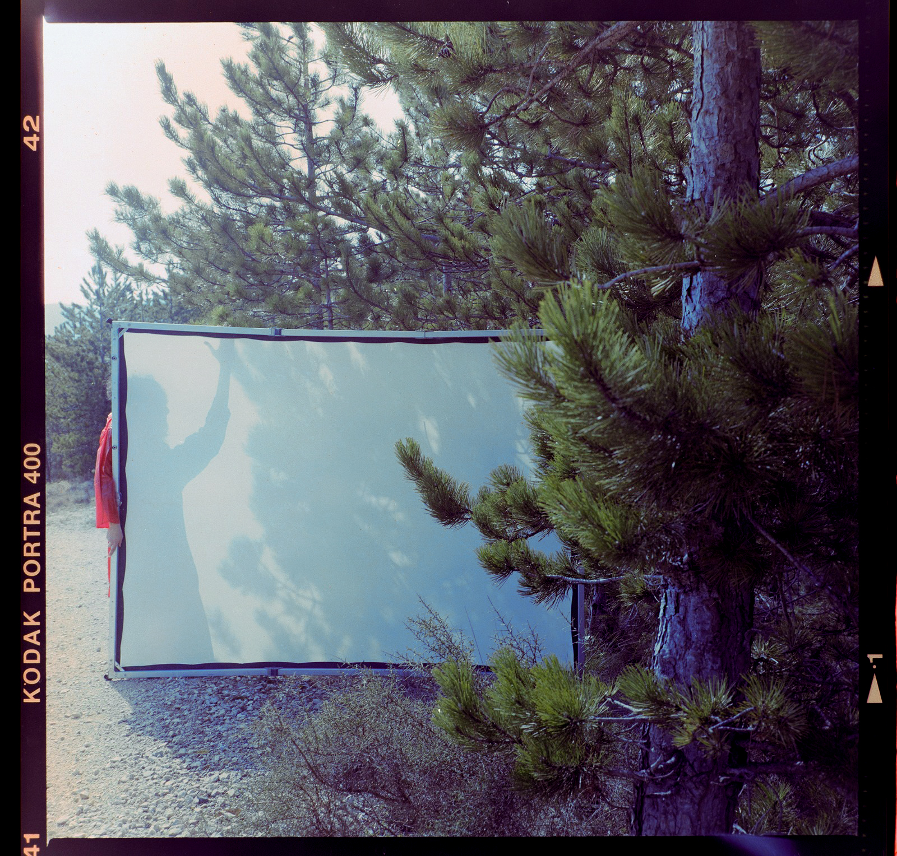
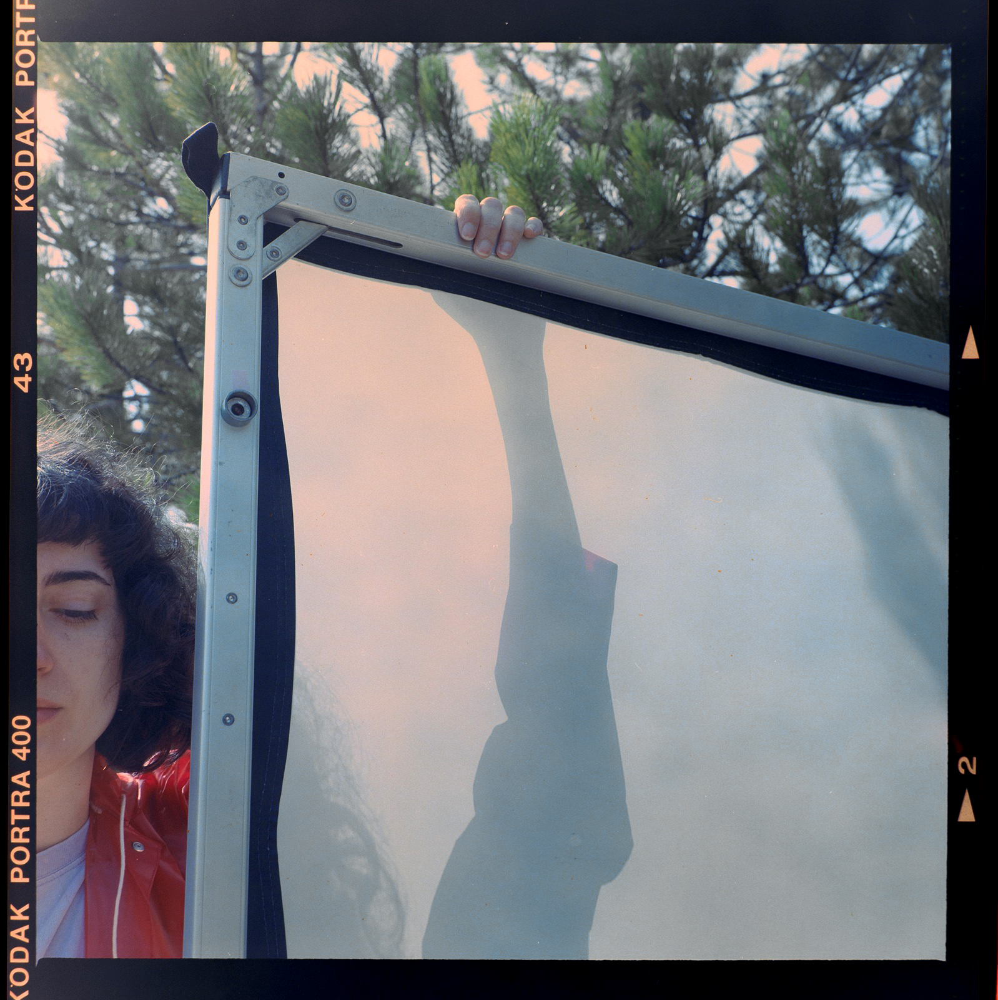
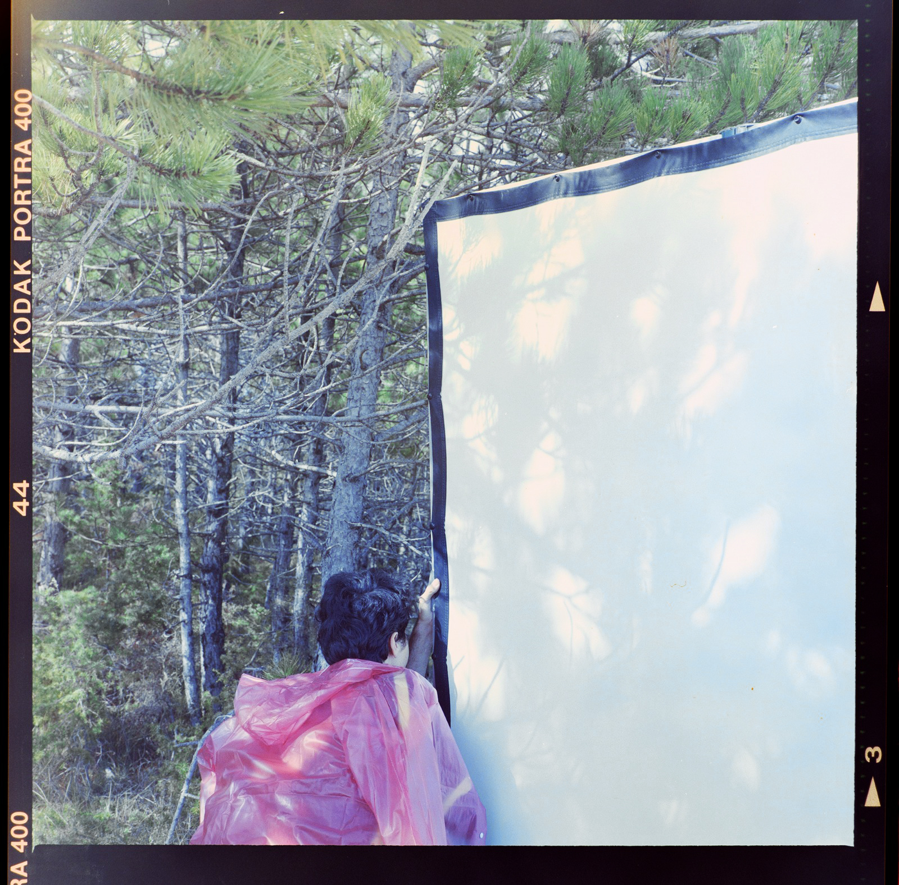

2022
Intervention in the landscape and film projection
Film (super8, colour, 3 mins, silent )
Portable/Foldable screen (3 x 4 meters)
Developed and presented with Las Synergies (Bruno Delgado Ramo, Paula Guerrero, Javi Montero)
Acciones para la pantalla is a sequence of actions performed outdoors & indoors with a screen. It was presented at Museo Oteiza in Pamplona and at Museum of Abstract Art (Fundación Juan March) in Cuenca.
«But if the light reflected on our faces came from a window, and the image projected parallel to it was lost in the sunlight of the landscape. If the film had been sustained in time for a week or so and we found ourselves there, observing , waiting, what form does the absence of the screen take then? We think of the missing rectangle and, however, from our empirical location and experience we always saw a trapezoid, many of them, all different and each person, at each moment, had our own. Starting up the screen, giving it certain autonomy, could help us confirm the proposition that Isidoro Valcárcel Medina expounds in 9 secuencias sobre la pantalla: projection as servant of the support on which it rests. In the projection environment, the audience’s level of at- tention fluctuates and is nuanced according to different environmental parameters while some specific ele- ments are maintained, favouring attention as a shared gesture, a filmic gesture. Kidnapping the screen would undoubtedly disrupt attention, but what if the state of confusion and the need to search for a support for the light brings back that shared gesture?»